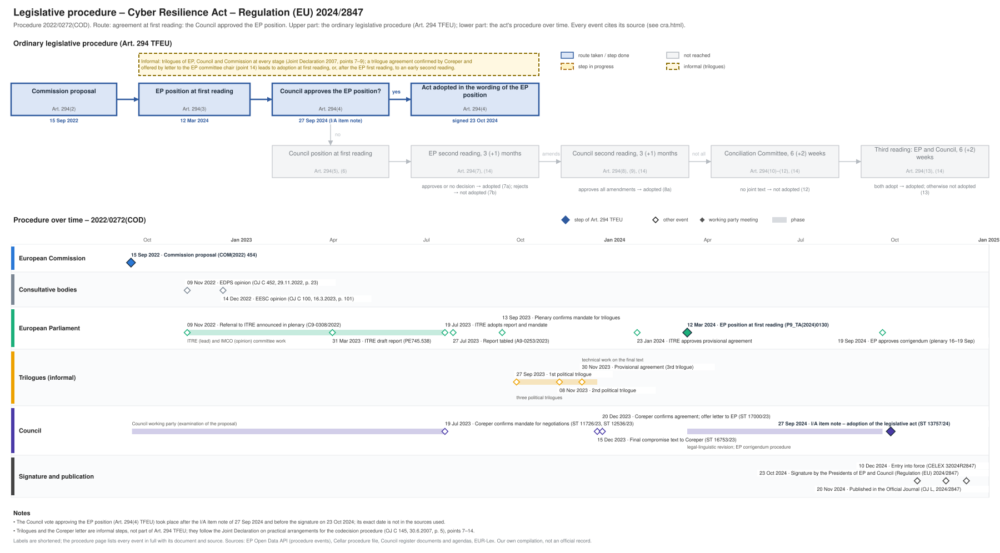

← Regulation timeline › Cyber Resilience Act › Legislative procedure · All procedures
Procedure 2022/0272(COD), completed. Drawing: SVG · PNG · PDF (A3) · draw.io · Page as Markdown: cra.md
| Stage | Completed, published 20 Nov 2024 |
|---|---|
| Route (Art. 294 TFEU) | Agreement at first reading: the Council approved the EP position |
| Latest activity | 10 Dec 2024 · Signature and publication: Entry into force (CELEX 32024R2847) |

| Committee | Role | Rapporteur | Shadow rapporteurs |
|---|---|---|---|
| ITRE Industry, Research and Energy | Responsible | Nicola Danti (Renew), appointed 26 Oct 2022 | Matteo Gazzini (), Beatrice Covassi (), Henna Virkkunen (EPP), Evžen Tošenovský (ECR), Ignazio Corrao (Greens/EFA), Marc Botenga (The Left) |
| IMCO Internal Market and Consumer Protection | Role not given | Morten Løkkegaard (Renew), appointed 16 Dec 2022 | – |
Source: EP Open Data API (participations) and the Legislative Observatory (joint committee, opinions declined); names link to each Member's page on the EP website. The API names no committee for shadow rapporteurs; they are assigned by the EP's order of participants, which groups each committee.
| Date | Actor | Event | Document | Source |
|---|---|---|---|---|
| 2022-09-15 | European Commission | Commission proposal – COM(2022) 454, based on Art. 114 TFEU (Art. 294(2) TFEU) | COM(2022) 454 | Cellar (CELEX 52022PC0454) |
| 2022-11-09 | Consultative bodies | EDPS opinion | OJ C 452, 29.11.2022, p. 23 | Recital 130 CRA; Council I/A item note ST 13757/24, point 2 |
| 2022-11-09 | European Parliament | Referral to ITRE announced in plenary | C9-0308/2022 | EP Open Data API, procedure 2022-0272 |
| 2022-12-14 | Consultative bodies | EESC opinion | OJ C 100, 16.3.2023, p. 101 | Cellar (CELEX 52022AE4103); ST 13757/24, point 3 |
| 2023-03-31 | European Parliament | ITRE draft report | PE745.538 | EP Open Data API (ITRE-PR-745538) |
| 2023-07-19 | Council | Coreper confirms mandate for negotiations | ST 11726/23, ST 12536/23 | Council outcome of proceedings ST 12536/23 |
| 2023-07-19 | European Parliament | ITRE adopts report and mandate | EP procedure file | EP Open Data API (COMMITTEE_ADOPTING_REPORT) |
| 2023-07-27 | European Parliament | Report tabled | A9-0253/2023 | EP Open Data API (TABLING_PLENARY) |
| 2023-09-13 | European Parliament | Plenary confirms mandate for trilogues | EP procedure file | EP Open Data API (PLENARY_ENDORSE_COMMITTEE_INTERINSTITUTIONAL_NEGOTIATIONS) |
| 2023-09-27 | Trilogues (informal) | 1st political trilogue | ST 16753/23 | Council note ST 16753/23, point 6 |
| 2023-11-08 | Trilogues (informal) | 2nd political trilogue | ST 16753/23 | Council note ST 16753/23, point 6 |
| 2023-11-30 | Trilogues (informal) | Provisional agreement (3rd trilogue) | ST 16753/23 | Council note ST 16753/23, points 6–7; ST 17000/23 |
| 2023-12-15 | Council | Final compromise text to Coreper | ST 16753/23 | Council note ST 16753/23 (dated 15 Dec 2023) |
| 2023-12-20 | Council | Coreper confirms agreement; offer letter to EP – Coreper confirmed the compromise text of 30 Nov 2023 and authorised the Presidency to send the offer letter to Parliament (Joint Declaration 2007, point 14) | ST 17000/23 | Council note ST 17000/23 |
| 2024-01-23 | European Parliament | ITRE approves provisional agreement | EP procedure file | EP Open Data API (COMMITTEE_APPROVE_PROVISIONAL_AGREEMENT) |
| 2024-03-12 | European Parliament | EP position at first reading – adopted without legal-linguistic revision (Art. 294(3) TFEU) | P9_TA(2024)0130 | Cellar (CELEX 52024AP0130); EP Open Data API |
| 2024-09-19 | European Parliament | EP approves corrigendum (plenary 16–19 Sep) | Council I/A item note ST 13757/24, point 5 | |
| 2024-09-27 | Council | I/A item note – adoption of the legislative act – Coreper asked to suggest that the Council approve the EP position (PE-CONS 100/23) (Art. 294(4) TFEU) | ST 13757/24 | Council I/A item note ST 13757/24 |
| 2024-10-23 | Signature and publication | Signature by the Presidents of EP and Council | Regulation (EU) 2024/2847 | Cellar (resource_legal_date_signature) |
| 2024-11-20 | Signature and publication | Published in the Official Journal | OJ L, 2024/2847 | Cellar |
| 2024-12-10 | Signature and publication | Entry into force (Art. 71(1) CRA) | CELEX 32024R2847 · en.md de.md | Art. 71(1) CRA; Cellar |
Every document the Council register, the EU database of the Parliament of Austria or the EP lists for the procedure, with its state: public documents link to the official file; documents that are not public link to their entry in the Austrian database where there is one (metadata only). Status: public; not public; not public, leak available (an unofficial copy is known to circulate outside the institutions; it is neither published nor quoted here). Released: when a document listed as not public was released, by the date of the Council's public PDF (a technical date) or else the day our daily check found it public.
| Date | Document | Kind | Subject | Status | Released | Text |
|---|---|---|---|---|---|---|
| 2022-09-16 | ST 12429/22 | council-transmission | Proposal for a REGULATION OF THE EUROPEAN PARLIAMENT AND OF THE COUNCIL on horizontal cybersecurity requirements for products with digital elements and … | public status unknown | – | – |
| 2022-09-16 | ST 12429/22 ADD 1 | council-transmission | ANNEXES to the PROPOSAL FOR A REGULATION OF THE EUROPEAN PARLIAMENT AND OF THE COUCIL on horizontal cybersecurity requirements for products with digital … | public status unknown | – | – |
| 2022-09-16 | ST 12429/22 ADD 2 | council-transmission | COMMISSION STAFF WORKING DOCUMENT IMPACT ASSESSMENT REPORT Accompanying the document Proposal for a Regulation of the European Parliament and of the Council on … | public status unknown | – | – |
| 2022-09-16 | ST 12429/22 ADD 3 | council-transmission | COMMISSION STAFF WORKING DOCUMENT IMPACT ASSESSMENT REPORT Annexes to the Impact Assessment Report Accompanying the document Proposal for a Regulation of the … | public status unknown | – | – |
| 2022-09-16 | ST 12429/22 ADD 4 | council-transmission | COMMISSION STAFF WORKING DOCUMENT IMPACT ASSESSMENT REPORT Accompanying the document Proposal for a Regulation of the European Parliament and of the Council on … | public status unknown | – | – |
| 2022-09-16 | ST 12429/22 ADD 5 | council-transmission | REGULATORY SCRUTINY BOARD OPINION Proposal of a Regulation of the European Parliament and of the Council on horizontal cybersecurity requirements for products … | public status unknown | – | – |
| 2022-09-16 | ST 12429/22 ADD 6 | council-transmission | COMMISSION STAFF WORKING DOCUMENT EXECUTIVE SUMMARY OF THE IMPACT ASSESSMENT REPORT Accompanying the document Proposal of a Regulation for the European … | public status unknown | – | – |
| 2022-11-16 | ST 14857/22 | council-transmission | Opinion on the application of the Principles of Subsidiarity and Proportionality | public status unknown | – | – |
| 2022-12-14 | CELEX 52022AE4103 | opinion | Opinion of the European Economic and Social Committee on ‘Proposal for a Regulation of the European Parliament and of the Council on horizontal cybersecurity … | public | – | – |
| 2022-12-16 | ST 16166/22 | council-transmission | Opinion on the application of the Principles of Subsidiarity and Proportionality | public status unknown | – | – |
| 2022-12-16 | ST 16178/22 | council-transmission | Opinion of the European Economic and Social Committee | public status unknown | – | – |
| 2022-12-21 | ST 16249/22 | council-transmission | Opinion on the application of the Principles of Subsidiarity and Proportionality | public status unknown | – | – |
| 2022-12-21 | ST 16268/22 | council-transmission | Opinion on the application of the Principles of Subsidiarity and Proportionality | public status unknown | – | – |
| 2023-03-31 | PE742.490 | ep-draft-opinion | DRAFT OPINION on the proposal for a regulation of the European Parliament and of the Council on Horizontal cybersecurity requirements for products with digital … | public | – | – |
| 2023-03-31 | PE745.538 | ep-draft-report | DRAFT REPORT on the proposal for a regulation of the European Parliament and of the Council on horizontal cybersecurity requirements for products with digital … | public | – | – |
| 2023-05-31 | ST 9943/23 | council-transmission | Opinion on the application of the Principles of Subsidiarity and Proportionality | public status unknown | – | – |
| 2023-06-30 | PE742.490 | ep-opinion | OPINION on the proposal for a regulation of the European Parliament and of the Council on Horizontal cybersecurity requirements for products with digital … | public | – | – |
| 2023-07-14 | ST 11726/23 | council-position | Mandate for negotiations with the European Parliament | public | – | – |
| 2023-07-27 | A9-0253/2023 | ep-report | REPORT on the proposal for a regulation of the European Parliament and of the Council on horizontal cybersecurity requirements for products with digital … | public | – | – |
| 2023-08-31 | ST 12536/23 | council-position | Mandate for negotiations with the European Parliament | public | – | – |
| 2023-12-18 | ST 16753/23 | agreed-text | Regulation of the European Parliament and of the Council on horizontal cybersecurity requirements for products with digital elements and amending Regulation … | public | – | – |
| 2023-12-20 | PE758.004 | agreed-text | PROVISIONAL AGREEMENT RESULTING FROM INTERINSTITUTIONAL NEGOTIATIONS Proposal for a regulation of the European Parliament and of the Council on horizontal … | public | – | – |
| 2023-12-20 | ST 17000/23 | council-note | Regulation of the European Parliament and of the Council on horizontal cybersecurity requirements for products with digital elements and amending Regulation … | public status unknown | – | – |
| 2024-03-12 | P9_TA(2024)0130 | ep-position | Cyber Resilience Act | public | – | – |
| 2024-04-11 | PE 100/23 | council-note | REGULATION OF THE EUROPEAN PARLIAMENT AND OF THE COUNCIL on horizontal cybersecurity requirements for products with digital elements and amending Regulations … | public status unknown | – | – |
| 2024-06-18 | ST 10078/24 | council-note | Proposals under the ordinary legislative procedure expected to undergo the Corrigendum Procedure in the European Parliament (part I) | public status unknown | – | – |
| 2024-09-27 | ST 13757/24 | council-note | Draft REGULATION OF THE EUROPEAN PARLIAMENT AND OF THE COUNCIL on horizontal cybersecurity requirements for products with digital elements and amending … | public status unknown | – | – |
| 2024-09-27 | ST 13757/24 ADD 1 | council-note | Draft REGULATION OF THE EUROPEAN PARLIAMENT AND OF THE COUNCIL on horizontal cybersecurity requirements for products with digital elements and amending … | public status unknown | – | – |
| 2024-10-24 | PE 100/23 REV 1 | council-note | REGULATION OF THE EUROPEAN PARLIAMENT AND OF THE COUNCIL ON HORIZONTAL CYBERSECURITY REQUIREMENTS FOR PRODUCTS WITH DIGITAL ELEMENTS AND AMENDING REGULATIONS … | public status unknown | – | – |
Unofficial Markdown conversions for reading, searching and project folders; only the official document is authentic. "Read" opens the rendered text on GitHub, where a link to a provision (#art-13, #rec-12, #annex-i) jumps to it.
| Date | Stage | Document | Markdown | Read |
|---|---|---|---|---|
| 2024-11-20 | oj | CELEX 32024R2847 | en de | GitHub |
| 2024-12-05 | corrigendum | CELEX 32024R2847R(01) | en | GitHub |
| 2025-07-02 | corrigendum | CELEX 32024R2847R(02) | en de | GitHub |
| 2025-10-17 | corrigendum | CELEX 32024R2847R(04) | en de | GitHub |
| 2026-08-06 | corrigendum | CELEX 32024R2847R(07) | de | GitHub |
Standardisation requests (Art. 10 of Regulation (EU) No 1025/2012) ask CEN, CENELEC and ETSI to draft harmonised standards in support of the act; standards cited in the Official Journal give a presumption of conformity. Planned requests come from the Commission's annual Union work programmes for European standardisation (Art. 8), which are plans, not decisions. Deadlines as set in the request's annexes (hand-checked).
COMMISSION IMPLEMENTING DECISION of 3.2.2025 on a standardisation request to the European Committee for Standardisation (CEN), the European Committee for Electrotechnical Standardisation (Cenelec) and the European Telecommunications Standards Institute (ETSI) as regards products with digital elements in support of Regulation (EU) 2024/2847 of the European Parliament and of the Council of 23 October 2024 on horizontal cybersecurity requirements for products with digital elements and amending Regulations (EU) No 168/2013 and (EU) 2019/1020 and Directive (EU) 2020/1828 (Cyber Resilience Act)
adopted 2025-02-03; expires 2027-11-30; ESOs: CEN, CENELEC, ETSI. eNorm · decision and annexes · en.md · de.md
| Item | Standard(s) requested | Kind | Deadline | Draft amendment |
|---|---|---|---|---|
| 1 | European standard(s) on designing, developing and producing products with digital elements in such a way that they ensure an appropriate level of cybersecurity based on the risks | new | 2026-08-30 | 2026-11-30 |
| 2 | European standard(s) on making products with digital elements available on the market without known exploitable vulnerabilities | new | 2027-10-30 | – |
| 3 | European standard(s) on making products with digital elements available on the market with a secure by default configuration | new | 2027-10-30 | – |
| 4 | European standard(s) on ensuring that vulnerabilities in products with digital elements can be addressed through security updates | new | 2027-10-30 | – |
| 5 | European standard(s) on ensuring protection of products with digital elements from unauthorised access and reporting on possible unauthorised access | new | 2027-10-30 | – |
| 6 | European standard(s) on protecting the confidentiality of data stored, transmitted or otherwise processed by a product with digital elements | new | 2027-10-30 | – |
| 7 | European standard(s) on protecting the integrity of data, commands, programs by a product with digital elements, and its configuration against any manipulation or modification not authorised by the user, as well as reporting on corruptions | new | 2027-10-30 | – |
| 8 | European standard(s) on processing only personal or other data that are adequate, relevant and limited to what is necessary in relation to the intended purpose of the product with digital elements (‘minimisation of data’) | new | 2027-10-30 | – |
| 9 | European standard(s) on protecting the availability of essential and basic functions of the product with digital elements | new | 2027-10-30 | – |
| 10 | European standard(s) on minimising the negative impact of a product with digital elements or its connected devices on the availability of services provided by other devices or networks | new | 2027-10-30 | – |
| 11 | European standard(s) on designing, developing and producing products with digital elements with limitted attack surfaces | new | 2027-10-30 | – |
| 12 | European standard(s) on designing, developing and producing products with digital elements that reduce the impact of an incident using appropriate exploitation mitigation mechanisms and techniques | new | 2027-10-30 | – |
| 13 | European standard(s) on providing security related information by recording and/or monitoring relevant internal activity of products with digital elements with an optout mechanism for the user | new | 2027-10-30 | – |
| 14 | European standard(s) on securely and easily removing or transferring all data and settings of a product with digital elements. | new | 2027-10-30 | – |
| 15 | European standard(s) on vulnerability handling for products with digital elements | new | 2026-08-30 | 2026-11-30 |
| 16 | European standard(s) on essential cybersecurity requirements for identity management systems and privileged access management software and hardware, including authentication and access control readers, including biometric readers | new | 2026-10-30 | 2027-01-31 |
| 17 | European standard(s) on essential cybersecurity requirements for standalone and embedded browsers | new | 2026-10-30 | 2027-01-31 |
| 18 | European standard(s) on essential cybersecurity requirements for password managers | new | 2026-10-30 | 2027-01-31 |
| 19 | European standard(s) on essential cybersecurity requirements for software that searches for, removes, or quarantines malicious software | new | 2026-10-30 | 2027-01-31 |
| 20 | European standard(s) on essential cybersecurity requirements for products with digital elements with the function of virtual private network (VPN) | new | 2026-10-30 | 2027-01-31 |
| 21 | European standard(s) on essential cybersecurity requirements for network management systems | new | 2026-10-30 | 2027-01-31 |
| 22 | European standard(s) on essential cybersecurity requirements for Security information and event management (SIEM) systems | new | 2026-10-30 | 2027-01-31 |
| 23 | European standard(s) on essential cybersecurity requirements for boot managers | new | 2026-10-30 | 2027-01-31 |
| 24 | European standard(s) on essential cybersecurity requirements for public key infrastructure and digital certificate issuance software | new | 2026-10-30 | 2027-01-31 |
| 25 | European standard(s) on essential cybersecurity requirements for physical and virtual network interfaces | new | 2026-10-30 | 2027-01-31 |
| 26 | European standard(s) on essential cybersecurity requirements for operating systems | new | 2026-10-30 | 2027-01-31 |
| 27 | European standard(s) on essential cybersecurity requirements for routers, modems intended for the connection to the internet, and switches | new | 2026-10-30 | 2027-01-31 |
| 28 | European standard(s) on essential cybersecurity requirements for microprocessors with security-related functionalities | new | 2026-10-30 | 2027-01-31 |
| 29 | European standard(s) on essential cybersecurity requirements for microcontrollers with security-related functionalities | new | 2026-10-30 | 2027-01-31 |
| 30 | European standard(s) on essential cybersecurity requirements for application specific integrated circuits (AS IC) and field-programmable gate arrays (FPGA) with security-related functionalities | new | 2026-10-30 | 2027-01-31 |
| 31 | European standard(s) on essential cybersecurity requirements for smart home general purpose virtual assistants | new | 2026-10-30 | 2027-01-31 |
| 32 | European standard(s) on essential cybersecurity requirements for smart home products with security functionalities, including smart door locks, security cameras, baby monitoring systems and alarm systems | new | 2026-10-30 | 2027-01-31 |
| 33 | European standard(s) on essential cybersecurity requirements for Internet connected toys covered by Directive 2009/48/EC that have social interactive features (e.g. speaking or filming) or that have location tracking features | new | 2026-10-30 | 2027-01-31 |
| 34 | European standard(s) on essential cybersecurity requirements for personal wearable products to be worn or placed on a human body that have a health monitoring (such as tracking) purpose and to which Regulation (EU) 2017/745 or Regulation (EU) 2017/746 do not apply or personal wearable products that are intended for the use by and for children | new | 2026-10-30 | 2027-01-31 |
| 35 | European standard(s) on essential cybersecurity requirements for hypervisors and container runtime systems that support virtualised execution of operating systems and similar environments | new | 2026-10-30 | 2027-01-31 |
| 36 | European standard(s) on essential cybersecurity requirements for firewalls, intrusion detection and/or prevention systems, including specifically those intended for industrial use | new | 2026-10-30 | 2027-01-31 |
| 37 | European standard(s) on essential cybersecurity requirements for tamperresistant microprocessors | new | 2026-10-30 | 2027-01-31 |
| 38 | European standard(s) on essential cybersecurity requirements for tamperresistant microcontrollers | new | 2026-10-30 | 2027-01-31 |
| 39 | European standard(s) on essential cybersecurity requirements for Hardware Devices with Security Boxes | new | 2026-10-30 | 2027-01-31 |
| 40 | European standard(s) on essential cybersecurity requirements for smart meter gateways within smart metering systems as defined in Article 2 (23) of Directive (EU) 2019/944 and other devices for advanced security purposes, including for secure cryptoprocessing | new | 2026-10-30 | 2027-01-31 |
| 41 | European standard(s) on essential cybersecurity requirements for smartcards or similar devices, including secure elements | new | 2026-10-30 | 2027-01-31 |
Source: Annex I to Commission Implementing Decision C(2025)618 (M/606), “List of new European Standards to be drafted”. Draft Commission implementing decision amending Implementing Decision C(2025)618 (replaces Annex I), Ref. Ares(2026)9002280 of 2026-09-23, Committee on Standards (C41700), written procedure launched 2026-09-16: Moves the 2026 deadlines (items 1 and 15: 30 Nov 2026; items 16–41: 31 Jan 2027) after the ESOs' joint report of 3 June 2026; items 2–14 unchanged. Ceases to apply if CEN, Cenelec or ETSI do not accept it within a month (Art. 2 of the draft). Not adopted. Draft.
| Year | Action (open for its text) |
|---|---|
| 2024 | 6. Cybersecurity requirements for products with digital elements
Work programme 2024, Annex, Action 6: en.md · de.md · original on EUR-Lex ↗ |
| 2025 | 6. Cybersecurity requirements for products with digital elements
Work programme 2025, Annex, Action 6: en.md · de.md · original on EUR-Lex ↗ |
| 2025 | 19. Standards driving quantum technology development and the implementation of Post-Quantum Cryptography protocols
Work programme 2025, Annex, Action 19: en.md · de.md · original on EUR-Lex ↗ |
| 2026 | 5. Cybersecurity requirements for products with digital elements
Work programme 2026, Annex, Action 5: en.md · de.md · original on EUR-Lex ↗ |
Other actions of the work programmes that ask for coordination with this act: 2026, Action 2: Standards driving quantum technology development and the implementation of Post-Quantum Cryptography protocols; 2026, Action 6: EU Digital Identity Wallet; 2026, Action 27: Design of unmanned aircraft for low-risk operations.
Projects of CEN, CENELEC and ETSI for the act, from their public work programmes: status, date of the current stage and the next one, and for CEN-CENELEC the forecasted date of the formal vote. Drafts of harmonised standards are not public; only the citation of a standard's reference in the Official Journal gives a presumption of conformity.
| Body | Project | Title | Status | Next step | Vote (forecast) | Request |
|---|---|---|---|---|---|---|
| CEN/CLC/JTC 13 | EN 40000-1-1:2026 WI JT013095 | Cybersecurity requirements for products with digital elements - Part 1-1: Vocabulary | Under Approval (2026-10-01) | next stage (2026-11-02) | 2026-07-28 | M/606 |
| CEN/CLC/JTC 13 | EN 40000-1-2:2026 WI JT013089 | Cybersecurity requirements for products with digital elements - Part 1-2: Principles, product risk management, and lifecycle activities | Under Approval (2026-10-01) | next stage (2026-11-02) | 2026-07-28 | M/606 |
| CEN/CLC/JTC 13 | prCEN/CLC/TR XXX WI JT013100 | Proof-of-concept for the application of EN 18037 in support of the CRA | Under Drafting (2025-08-28) | next stage (2025-11-15) | – | – |
| CEN/CLC/JTC 13 | prCEN/CLC/TS XXX WI JT013099 | Guidance for the application of EN 18037 in support of the CRA | Under Drafting (2025-08-28) | – | – | M/606 |
| CEN/CLC/JTC 13 | prEN 40000-1-3 WI JT013090 | Cybersecurity requirements for products with digital elements - Part 1-3: Vulnerability handling | Under Approval (2026-03-05) | next stage (2025-06-06) | 2025-06-06 | M/606 |
| CEN/CLC/JTC 13 | prEN XXX WI JT013096 | Cybersecurity requirements for products with digital elements – Smart Meter Gateway | Under Drafting (2026-03-09) | next stage (2025-11-30) | 2026-12-21 | M/606 |
| CEN/CLC/JTC 13 | prEN XXX WI JT013091 | Cybersecurity requirements for products with digital elements - Generic security requirements | Under Drafting (2025-03-05) | – | 2026-09-20 | M/606 |
| CLC/TC 65X | EN IEC 62443-3-3:2019/prAA | Industrial communication networks - Network and system security - Part 3-3: System security requirements and security levels | Under Drafting (2024-06-27) | next stage (2024-10-24) | 2027-02-08 | M/606 |
| CLC/TC 65X | EN IEC 62443-4-1:2018/prAA:2026 | Security for industrial automation and control systems - Part 4-1: Secure product development lifecycle requirements | Under Approval (2026-06-05) | next stage (2027-02-23) | 2027-02-23 | M/606 |
| CLC/TC 65X | EN IEC 62443-4-2:2019/prAA:2026 | Security for industrial automation and control systems - Part 4-2: Technical security requirements for ACS components | Under Approval (2026-06-05) | next stage (2027-02-08) | 2027-02-08 | M/606 |
| CLC/TC 65X | prEN 50770-1 | Security for Operational Technologies - Part 1: Security Profile for firewalls and intrusion detection and prevention systems (based on EN IEC 62443) | Under Drafting (2025-10-21) | next stage (2026-02-17) | 2027-08-03 | M/606 |
| CLC/TC 65X | prEN 50770-2 | (prEN 50770-2) Security for Operational Technologies - Part 2: Security Profile for network management systems (based on EN IEC 62443) | Under Drafting (2025-12-27) | next stage (2026-03-22) | 2027-08-03 | M/606 |
| CLC/TC 65X | prEN 50770-3 | (prEN 50770-3) Security for Operational Technologies - Part 3: Security Profile for physical and virtual network interfaces (based on EN IEC 62443) | Under Drafting (2025-12-27) | next stage (2026-03-22) | 2027-08-03 | M/606 |
| CLC/TC 65X | prEN 50770-4 | (prEN 50770-4) Security for Operational Technologies - Part 4: Security Profile for products with digital elements with the function of virtual private network (VPN) | Under Drafting (2025-10-21) | next stage (2026-02-17) | 2027-08-03 | M/606 |
| CLC/TC 65X | prEN 50770-5 | Security for Operational Technologies - Part 5: Security Profile for routers, modems intended for the connection to the internet, and switches (based on EN IEC 62443) | Under Drafting (2025-10-21) | next stage (2026-02-17) | 2027-08-03 | M/606 |
| CLC/TC 65X | prEN 50770-6 | Security for Operational Technologies - Part 6: Security Profile for security information and event management (SIEM) systems (based on EN IEC 62443) | Under Drafting (2025-10-21) | next stage (2026-02-17) | 2027-08-03 | M/606 |
| CYBER EUSR | EN 304 617 WI DEN/CYBER-EUS-006 | Cybersecurity requirements for browsers | Drafting Stage – 7 VR – EC assessment before EV received (2026-09-28) | Resolution of EC comments (2026-10-31) | – | M/606 |
| CYBER EUSR | EN 304 618 WI DEN/CYBER-EUS-007 | Cybersecurity requirements for password managers | Approval Stage – Comments categorisation assessed (2026-09-22) | Final deliverable endorsed for registrat (2026-11-23) | – | M/606 |
| CYBER EUSR | EN 304 619 WI DEN/CYBER-EUS-0018 | Cybersecurity requirements for software that searches for, removes, or quarantines malicious software | Drafting Stage – Stable draft (2026-10-01) | Resolution of EC comments (2026-10-12) | – | M/606 |
| CYBER EUSR | EN 304 620 WI DEN/CYBER-EUS-005 | Cybersecurity requirements for Virtual Private Networks (VPNs) | Drafting Stage – 7 VR – EC assessment before EV received (2026-09-28) | Resolution of EC comments (2026-10-31) | – | M/606 |
| CYBER EUSR | EN 304 621 WI DEN/CYBER-EUS-009 | Cybersecurity requirements for Network Management systems | Approval Stage – Deliverable approval procedure initiated (2026-08-13) | 7 VR – EC assessment before EV received (2026-09-13) | – | M/606 |
| CYBER EUSR | EN 304 622 WI DEN/CYBER-EUS-0010 | Cybersecurity requirements for Security information and event management (SIEM) systems | Approval Stage – Deliverable approval procedure initiated (2026-08-13) | 7 VR – EC assessment before EV received (2026-09-13) | – | M/606 |
| CYBER EUSR | EN 304 623 WI DEN/CYBER-EUS-008 | Cybersecurity requirements for boot managers | Approval Stage – Comments categorisation assessed (2026-09-16) | Final deliverable endorsed for registrat (2026-12-05) | – | M/606 |
| CYBER EUSR | EN 304 624 WI DEN/CYBER-EUS-0015 | Cybersecurity requirements for Public key infrastructure and digital certificate issuance software | Drafting Stage – 7 V – EC assessment before EV requested (2026-08-10) | 7 VR – EC assessment before EV received (2026-09-10) | – | M/606 |
| CYBER EUSR | EN 304 625 WI DEN/CYBER-EUS-0017 | Cybersecurity requirements for physical and virtual network interfaces | Drafting Stage – 7 VR – EC assessment before EV received (2026-09-28) | Resolution of EC comments (2026-10-31) | – | M/606 |
| CYBER EUSR | EN 304 626 WI DEN/CYBER-EUS-0012 | Cybersecurity requirements for operating systems | Drafting Stage – 7 VR – EC assessment before EV received (2026-09-28) | Resolution of EC comments (2026-10-31) | – | M/606 |
| CYBER EUSR | EN 304 627 WI DEN/CYBER-EUS-0013 | Cybersecurity requirements for routers, modems intended for the connection to the internet, and switches | Approval Stage – Comments categorisation assessed (2026-10-01) | Final deliverable endorsed for registrat (2026-11-25) | – | M/606 |
| CYBER EUSR | EN 304 631 WI DEN/CYBER-EUS-0011 | Cybersecurity requirements for smart home general purpose virtual assistants | Drafting Stage – 7 VR – EC assessment before EV received (2026-09-17) | Resolution of EC comments (2026-10-11) | – | M/606 |
| CYBER EUSR | EN 304 632 WI DEN/CYBER-EUS-0014 | Cybersecurity requirements for smart home products with security functionalities; including smart door locks, security cameras, baby monitoring systems and alarm systems CRA Smart home security products Topic # 32 full | Drafting Stage – 7 VR – EC assessment before EV received (2026-09-11) | Resolution of EC comments (2026-10-11) | – | M/606 |
| CYBER EUSR | EN 304 633 WI DEN/CYBER-EUS-004 | Cybersecurity requirements for Internet connected toys covered by Directive 2009/48/EC that have social interactive features (e.g. speaking or filming) or that have location tracking features CRA Internet connected toys Topic # 33 full scope | Drafting Stage – 7 VR – EC assessment before EV received (2026-09-11) | Resolution of EC comments (2026-10-11) | – | M/606 |
| CYBER EUSR | EN 304 634 WI DEN/CYBER-EUS-003 | Cybersecurity requirements for personal wearable | Drafting Stage – 7 VR – EC assessment before EV received (2026-09-23) | Resolution of EC comments (2026-10-15) | – | M/606 |
| CYBER EUSR | EN 304 635 WI DEN/CYBER-EUS-0016 | Cybersecurity requirements for Virtualisation Execution Stack (VES) and Container Execution Stack (CES), including hypervisors and container runtime systems | Approval Stage – Comments categorisation assessed (2026-09-17) | Final deliverable endorsed for registrat (2026-12-11) | – | M/606 |
| CYBER EUSR | EN 304 636 WI DEN/CYBER-EUS-0020 | Cybersecurity requirements for firewalls, intrusion detection and/or prevention systems | Approval Stage – Comments categorisation assessed (2026-10-06) | Final deliverable endorsed for registrat (2026-12-22) | – | M/606 |
| CYBER EUSR | EN 304 642 WI DEN/CYBER-EUS-0019 | Cybersecurity Requirements for Network Functions of Telecommunications Systems | Drafting Stage – Early draft (2026-07-31) | Mature draft (2026-10-31) | – | M/606 |
Sources: CEN/CLC/JTC 13; CLC/TC 65X; ETSI work programme, Directive 2024/2847.
Comitology committees of Member State representatives give opinions on draft implementing acts (Regulation (EU) No 182/2011); expert groups advise the Commission on delegated acts, guidance and implementation; groups set up by an act itself (e.g. the NIS Cooperation Group) bring together the Member States, the Commission and agencies. Meetings and documents as published in the Comitology Register, the Register of Commission expert groups and on the Commission's pages of these groups, from 2024 on.
Comitology committee C130100, CNECT; examination procedure (Art. 5, 6 and 7 of Regulation (EU) No 182/2011). Official source: Comitology Register ↗
| Date | Meeting | Documents |
|---|---|---|
| 2025-11-07 | 3rd Product Security Committee Meeting | agenda · draft implementing act · draft implementing act v2 · voting sheet · summary record |
| 2025-10-10 | 2nd Product Security Committee Meeting | agenda · draft implementing act · summary record |
| 2025-09-10 | 1st Product Security Committee Meeting | agenda · draft implementing act · summary record |
Expert group E03967, CNECT. Official source: Register of Commission expert groups ↗
| Date | Meeting | Documents |
|---|---|---|
| 2026-10-08 | 6th meeting of the CRA Expert Group | agenda |
| 2026-06-10 | 5th meeting of the CRA Expert Group | agenda · minutes |
| 2026-03-04 | 4th meeting of the CRA Expert Group | agenda · minutes |
| 2025-10-22 | 3rd meeting of the CRA Expert Group | agenda · minutes |
| 2025-06-04 | 2nd meeting of the CRA Expert Group | agenda · minutes · draft delegated act |
| 2025-02-12 | 1st meeting of the CRA Expert Group | agenda · minutes · other document |